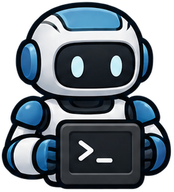
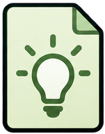

Wrong itemFalse about the environment
Don't Just Trust Your Memory: Evidence-Linked Memory Reduces Memory-Induced Degradation in LLM Agents
1KAIST 2DeepAuto.ai
*Equal contribution †Co-advisors
Memory can break what an agent already solves.
A lesson is only an interpretation of a past trajectory, so it can mislead the agent. The agent then fails a task it would solve without memory, a failure we call memory-induced degradation.


Memory-induced degradation
Main causes of memory-induced degradation
Wrong itemFalse about the environment
Out-of-scope useA sound item, outside its scope
MisusedA sound item, misread or stretched
NEW TASKlook at vase under the desklamp.
Turns are from real episodes, shortened.
WikiTrace keeps the path back. It links each lesson to the past trajectory it came from, and the agent follows that link back to the evidence when it needs to.
WikiTrace scores highest on all eight suites from five benchmarks, with the lowest average Regression.
| No Memory | Insights Onlysame lessons, no links | WikiTrace | |
|---|---|---|---|
| Score ↑ | 79.5 | 87.0 | 90.2 |
| Regression ↓ | 9.7% | 6.5% | 4.5% |
Averaged over eight suites. Regression is the rate at which memory turns successes into failures; for No Memory it comes from rerunning the agent without memory.
This example shows how WikiTrace works on a PlanCraft task:
the agent doubts a lesson from memory, opens the runs behind it, and corrects the lesson before acting.
Each past run has a task xi, a record of actions and observations ri, and a binary outcome si. A compiler reads one run at a time and writes a compilation ci and at most three insights Ii.
ri
Compiler
Compilation ci
{}Insights Ii
The memory is M = (R, C, I, E), where E links each insight down to its compilation and raw trajectory. Insights from one run share the same evidence.
The first message holds every insight in I and the three most similar past runs. The memory M is mounted read-only, and reading it costs no environment steps.
The agent descends through the links when an insight
lacks details needed to act
conflicts with another insight
comes from a failed run
Read down the links!
WikiTrace scores highest on all eight suites and has the lowest average Regression.
Score ↑
Regression (%) ↓
Score is the mean over three trials, averaged over eight suites from five benchmarks. Regression is the rate at which memory turns successes into failures, with 95% intervals; the band is rerunning the agent without memory.
The agent descends more on harder tasks, where its advantage over Insights Only is largest.
Hard, Medium and Easy tasks are solved by none, some or all three No Memory trials. Δ is WikiTrace minus Insights Only on the same task and trial. Even without descent, WikiTrace outperforms Insights Only because it tends to apply memory more selectively. Text-world benchmarks.
TASKDetermine if unknown substance U is electrically conductive. Blue box if it is, orange box if not.
Before testing an unknown substance, first test the circuit with a known conductor … to ensure the battery, wires, and indicator (bulb/buzzer) work correctly.
Taken as a rule, it keeps the agent checking the circuit instead of reaching a verdict.
Testing another substance, the run keeps rewiring its circuit. The bulbs and the buzzer never turn on, even with the substance bypassed, and the step budget runs out.
Testing aluminum foil, the run wires the foil straight into a loop with the battery and bulb, with no separate circuit check. The bulb lights, and the foil goes in the blue box.
TASKclean some cloth and put it in cabinet.
When searching for an object like a handtowel, first check its designated holder (e.g., handtowelholder).
It does not say that cloth is a separate object in this game.
Asked to put a handtowel on a cabinet, the run opens nine cabinets. Cabinet 7 holds a cloth 1, which it passes over, and the handtowel turns up on the handtowelholder.
Only the raw trajectory names cloth; its compilation does not.
@misc{lee2026wikitrace,
title = {Don't Just Trust Your Memory: Evidence-Linked Memory Reduces
Memory-Induced Degradation in LLM Agents},
author = {Lee, Yukyeong and Choi, Yumin and Baek, Jinheon and Hwang, Sung Ju},
year = {2026},
eprint = {2611.14320},
archivePrefix = {arXiv},
primaryClass = {cs.AI},
url = {https://arxiv.org/abs/2611.14320}
}